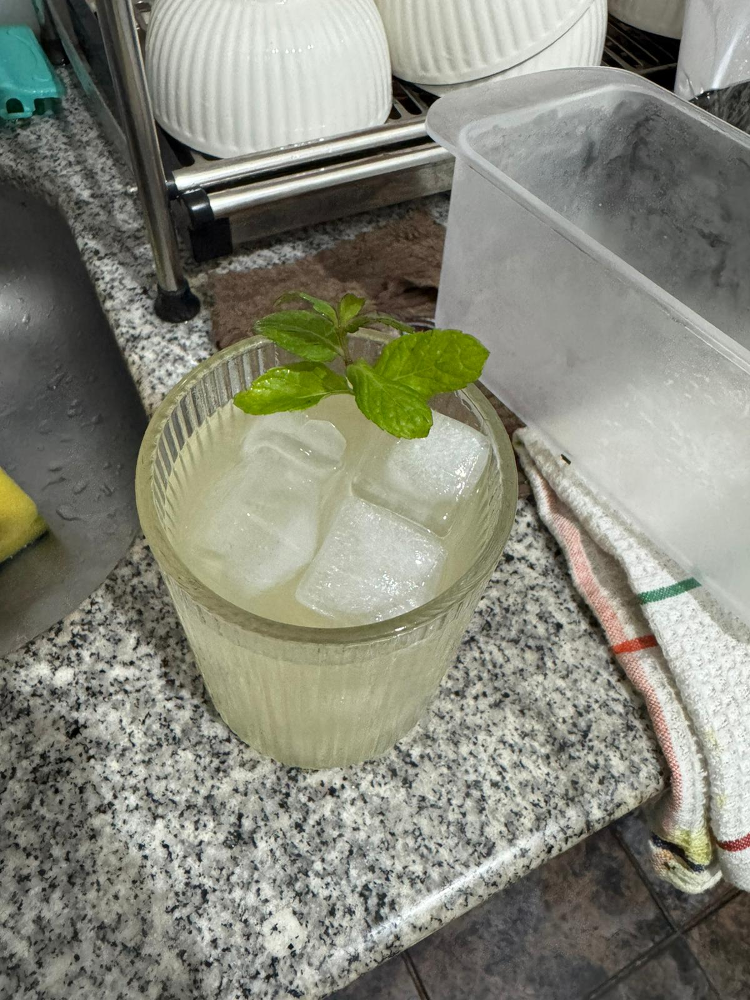

Cóctel de Autor de Perfil Cítrico

Este trago nació un viernes, después de una semana muy pesada en el trabajo donde no salía nada bien. Estaba tan estresado que lo único que quería era armar las valijas e irme de vacaciones, pero por razones laborales era imposible pedirme días. Como no me quedaba otra, decidí despejar la mente armando un trago en casa con las cosas que más me gustaban. Agarré la coctelera y mezclé mis dos bebidas favoritas: vodka y gin. Después le sumé menta (que es mi planta preferida), jugo de limón y, para darle el color rojo que es mi favorito, le agregué un chorro de granadina. Cuando lo serví y lo empecé a tomar, me relajé tanto que por un momento sentí que estaba de vacaciones en algún lado, olvidándome de los problemas. Por eso le puse "Stress Out", porque literalmente me ayudó a sacarme todo el estrés de la semana. El trago quedó tan rico que me dieron ganas de repetir la experiencia varios días seguidos. Sin embargo, como eran días laborales, por obvias razones no podía estar tomando alcohol. Así fue como decidí crear la alternativa sin alcohol para poder disfrutarlo en cualquier momento de la semana, bautizándolo "Stress Out But Not All".
Directo en tu vaso Highball de medio litro, añade los alcoholes (vodka, licor de durazno, gin), el jugo de lima y el saborizante de menta. Remueve bien para integrar los sabores cítricos y herbáceos.
Llena el vaso con todo el hielo que quepa hasta el tope. La abundancia de hielo asegura que el líquido se enfríe de golpe sin llegar a diluirse rápido.
Vierte la Sprite Zero (a temperatura ambiente) de manera muy lenta sobre los hielos. Hacerlo despacio evita el exceso de espuma y la pérdida de gas por choque térmico.
Notarás que el hielo inicial bajará su volumen al enfriar la gaseosa. Corona agregando un par de cubos extra arriba para mantener el trago helado de principio a fin.
Debido a su perfil cítrico, refrescante y sus propiedades digestivas, este cóctel es perfecto para acompañar comidas que contrasten su acidez:
Quesos (semiduros o maduros), salames, fiambres selectos y frutos secos. La grasa noble de los quesos y embutidos se limpia perfectamente en boca gracias a la acidez de la lima y el toque burbujeante de la Sprite.